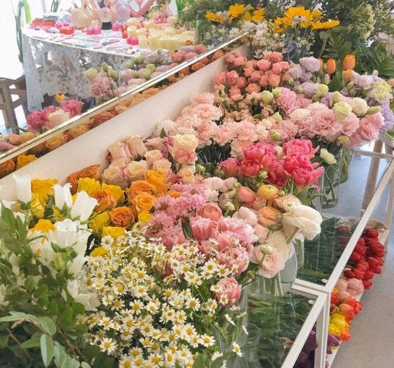

My CSS Practice Page
I have always been a big fan of flowers.
so this page will pay hommage to that!
If you ever feel like sending me flowers, Fresh Sends has some really great options.
Fall Flowers
A great time to find popular colors like yellow and orange, fall blossoms bring an earthy, rustic charm to the table. Though fewer flowers bloom at this time of year, many hardy classics can be spray-tinted or grown to honor special fall colors - hello, orange roses and yellow daisies - to help you create some stunning bouquets for Thanksgiving, weddings, and beyond.
Chrysanthemums (Mums) - More commonly known as mums, chrysanthemums are a classic symbol of autumn. These pretty perennials bloom in early fall and stay in season throughout November, making them a popular pick for any and all fall creations. Though we usually see them in burnt orange and yellow this time of year, mums can be ordered in an assortment of bright colors.
Sunflowers - Who doesn't love sunflowers in the fall? These gorgeous yellow-orange icons are associated with autumn because they commonly stay in bloom well into the fall, but you'll usually catch sunflowers at their peak in mid-summer. They are a pretty way to add seasonal flair to all your fall bouquets and centerpieces.
A visual of gorgeous flowers:
I love the look of these flowers below.
do you love it too?
Spring Flowers
As the snow thaws and weather breaks, we all look forward to bright spring flowers. This is the season when many of the most popular flowers are at their peak including roses and the elusive, short-season peonies, that are so desirable today. Here are all the best spring flowers for weddings, showers, Easter, Mother's Day, and more.
Available in a rainbow of colors from deep blue to soft pink, anemones are a versatile and adaptable symbol of spring. They're marked by their soft, vibrant petals and contrasting center. They are similar to poppies and provide the same artistic feel and jolt of color. This flower belongs to the Ranunculaceae family, which has over 200 species.
As the most popular flower in the world, its no surprise that the rose dominates its season too. Symbolizing everything from deep romance and sensuality to joy and friendship, this spring flower is a true charmer that can be incorporated into any arrangement or bouquet. Spring is also the time to grab your fresh-cut garden roses as a fluffier, larger rose for trendy floral creations..
The darling of the floral world de jure, the peony is an undeniable enchanter. Like the garden rose, it offers a fluffy, dramatic silhouette that truly makes the bouquet or arrangement. Peonies have a short season from April through May and June with blooms lasting only 10 days, which makes them expensive and limited. Indeed, many brides plan their weddings around this flowers season so they can use them to enhance their stunning spring wedding bouquets!
45% of the flowers managed by the floral industry die before they are even sold.
Below you will find a chart.
| 2019 Export Revenue | Biggest Producer of | |
|---|---|---|
| Netherlands | $4.6 billion | Tulips |
| Ecuador | $879.8 million | Roses |
| Columbia | $1.4 billion | Carnations |